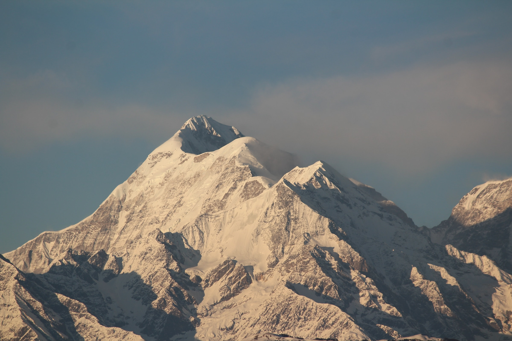

Czyste powietrze i natura
Góry to nie tylko zapierające dech w piersiach widoki, to przestrzeń, w której czas płynie wolniej. Niezależnie od tego, czy szukasz wymagających szlaków trekkingowych, czy spokojnych spacerów dolinami w otoczeniu majestatycznych szczytów, nasza oferta pozwala dopasować wyjazd do Twojej kondycji i oczekiwań. Od zaśnieżonych stoków idealnych na narty zimą, po zielone, tętniące życiem hale latem.
Kompleksowa organizacja
Współpracujemy ze sprawdzonymi hotelami i pensjonatami, które gwarantują komfortowy wypoczynek po dniu pełnym wrażeń. Zapewniamy kompleksową obsługę: od transportu, przez noclegi z lokalną kuchnią, aż po opcjonalną opiekę przewodników. Zostaw organizację nam i po prostu ciesz się bliskością natury i czystym górskim powietrzem.
Nasze tury

Alpy

Karpaty

Himalaje